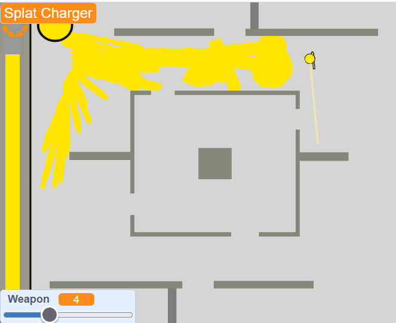
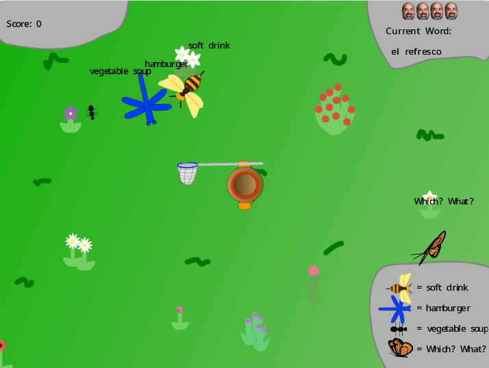
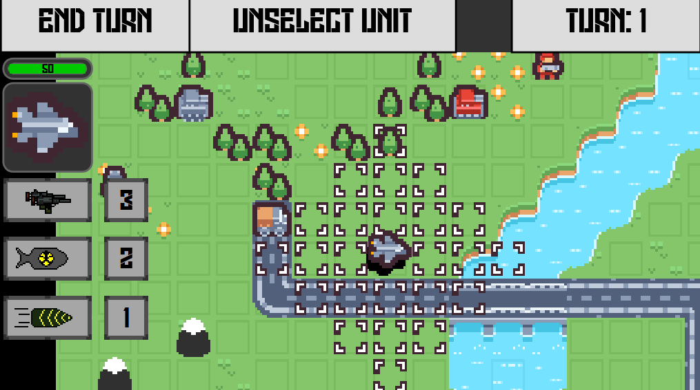
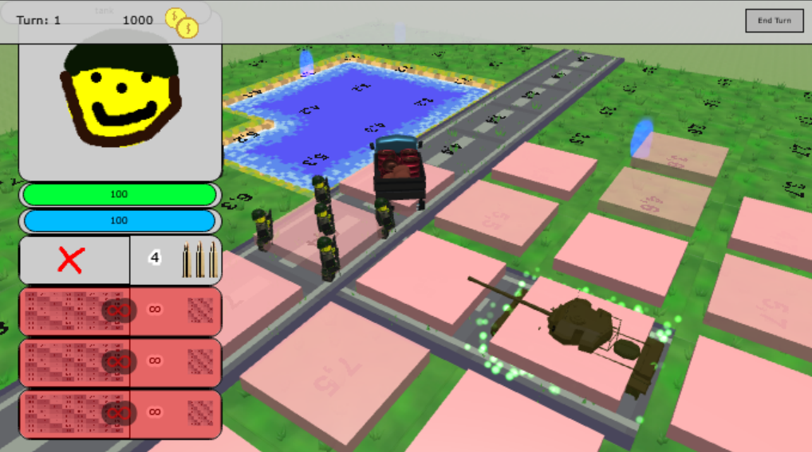
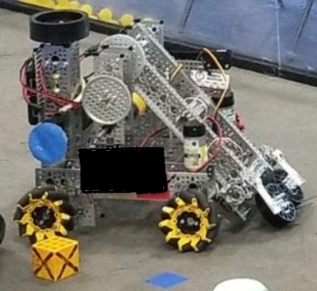
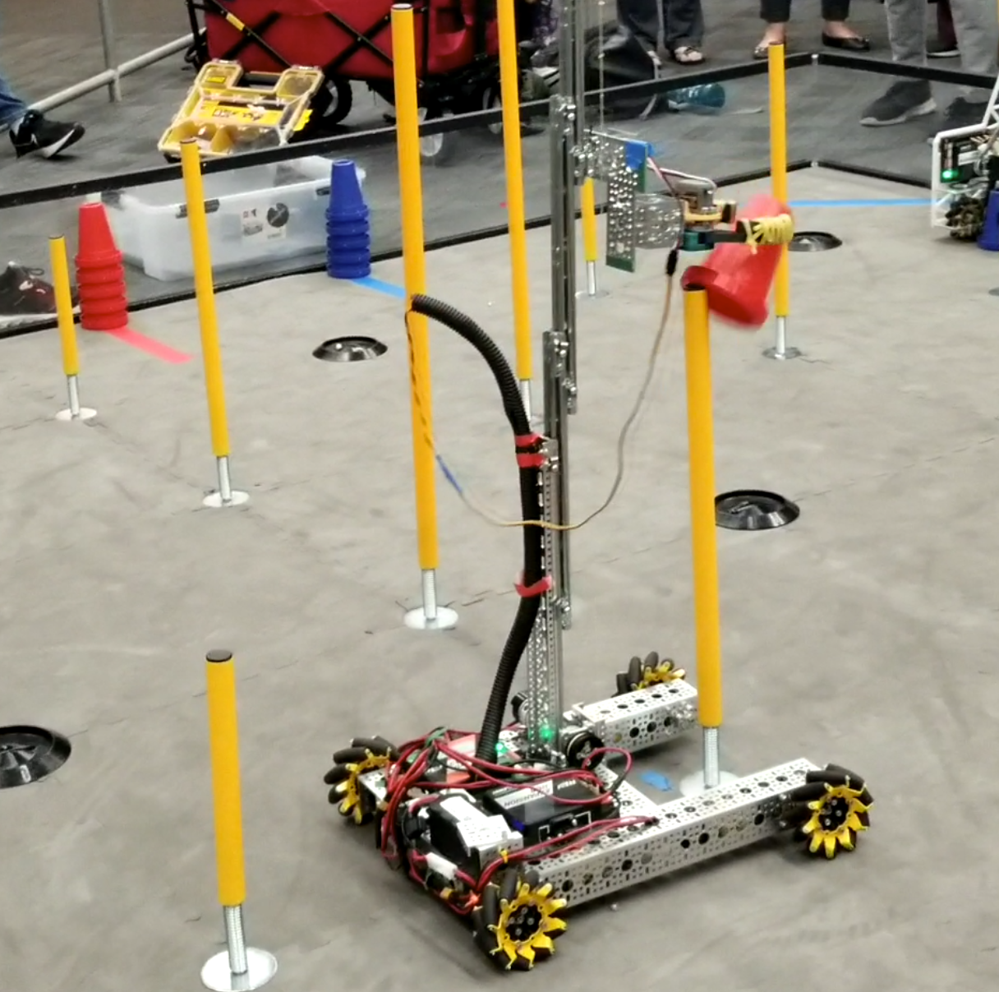
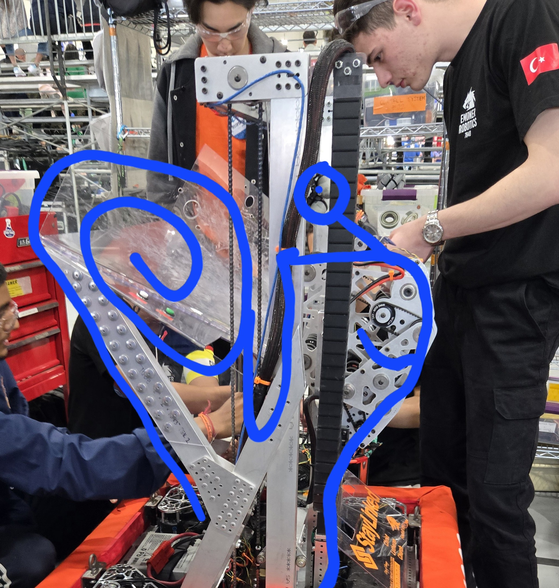
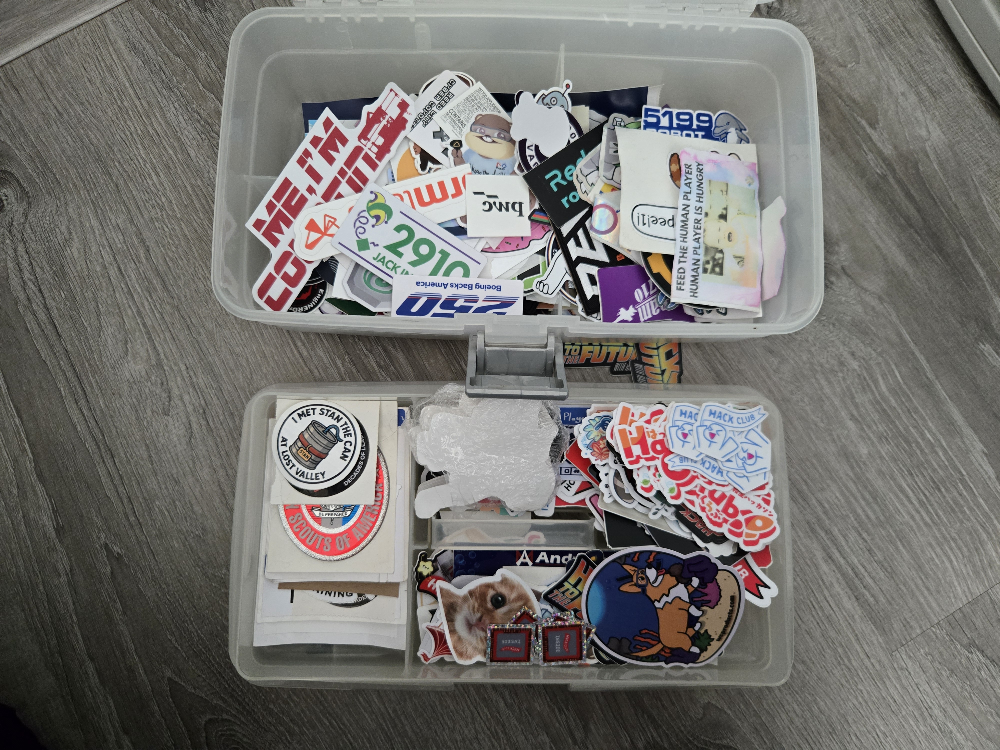

apinguen was not always named apinguen.
For a while, apinguen was known as porg22 (after the Star Wars animal).
A few years later, apinguen realized that having random numbers on the end of the name was a bit
boring.
Hence porg22 became AgentPorg because like secret agent and cool stuff like that.
A year or two passed, and apinguen realized that "agent" was kinda weird and having a username based
off a fictional bird was not the best long-term choice.
Accurate picture of apinguen today
So apinguen settled down one day to decide on a new standardized username.
He decided to do it based off an animal, because he didn't have any other good ideas, and like,
animals.
But penguin is 7 letters, and what about platforms that have a minimum length of 8 characters?
So "a" was added on, and it still kinda made sense because "a penguin".
And obviously "apenguin" is probably going to already be taken on most platforms, so the e and i
were swapped, making "apinguen".
Programming journey of apinguen
apinguen started programming in elementary school. He was introduced to coding through Code.org,
specifically the Minecraft levels.
However, it eventually got boring after a while, and apinguen discovered Scratch.
apinguen's first clicker
6th grade shenanigans

attempt at making 2d Splatoon

*objectively* better clone of game apinguen played for Spanish class
Now, little apinguen was quite the interesting person.
He made a lot of random stuff, like for example, a point and click game for his teachers for teacher
appreciation day, a solar system trivia game, and retextured/overpowered versions of popular Scratch
games.
And apinguen stayed on Scratch for a while, throughout ~7th grade, probably much longer than he should
have, probably due to the lack of knowledge of other opportunities.
Some other projects of little apinguen included a text-based survival game in Lua on Replit (funnily
enough, it was inspired by a game made up by apinguen and some of his friends to pass time on a long
backpacking trip) and a turn-based strategy game in an engine called Microstudio (first in 2d, then an
attempt to port to 3d using Microstudio and Babylon.js, and then a shift to Unreal Engine when
Microstudio turned out to not have enough performance [not finished yet, but that will be discussed in a
later section]).
Throughout these years, primarily when he was in elementary school, apinguen did some basic HTML and
CSS, making a website to catalog the random Scratch games you have.

2d turn-based game

attempt at3d turn-based game
apinguen tried to learn Java in 7th grade for his FTC team but the year ended before he could do
much, and the team collapsed the next year... so that was fun.
But, he joined an FRC team in 9th grade (will be discussed in a later section), and so started learning
Java and actually retained it this time since he was basically programming every week.
And high school happened so apinguen has a lot less time for this kind of stuff.
apinguen and robotics

ftc robot
apinguen did a little Lego robotics in elementary school, but honestly it was pretty sad.
Then, he went to middle school and saw a poster on his math teacher's door for the opportunity to join a
robotics team.
It said it was only open to 7th graders and above but apinguen talked to his math teacher and was super
excited when she said he coud join.
So apinguen counted down the days until the first meeting and was super eager to get started.
It was an FTC team, and everyone was new to it (including the two teachers who were running it) so it
was definitely a learning experience for everyone.
The team went to the first meet with just a drivetrain and a single actuator to complete one of the
tasks of the game that year.
With the second meet, the team had a fully built kitbot.
Somehow, throughout the practice meets, apinguen's team was rank 2-3 in the region, due to lucky
schedules.
The regional? district event? whatever the local compettition was called? it's been a while since
apinguen was in ftc... came and once again apinguen's team ended up with a lucky schedule.
So much that they actually managed to captain the lowest alliance after several captains picked each
other.
Nevertheless, they were eliminated immediately in the elims, but it was a fun experience.

uhh yeah
The next year the school decided to just focus on learning and not actually compete, so the team
still built a robot for the game that year, but didn't actually compete with it.
apinguen was kinda disappointed and the learning was super slow.
Along the way, he did learn a little Onshape and attempted to learn Java for programming instead of
blocks (he was unsuccessful in that but would finally be successful 2 years later).
One of the interesting things was that the mentors would give the team rewards (ex. boba party, pizza
party) for milestones they reached (like working elevator, etc).
One of the proposed awards was In-n-Out for the team if apinguen got image recognition working.
Unfortunately, apinguen ran out of time that year since he had to help with the mechanical aspects of
the robot (the other people weren't doing their jobs smh) and so he was sad about that.
The team didn't exist next year so...
And that's the end of apinguen's short 1 (to 2ish) year journey in FTC.
Then high school came and apinguen found out there was an FRC team there.
But it never got started so apinguen looked for other opportunities.
While looking for Scouting crews, he found one that was an FRC team.
He joined ~2 weeks into the season, so he was instantly put to work filing and deburring things.
Though he did never have to learn tapping.

our robot was named turbo because get it...? the snail...
one of our wheels was broken this match but still funny
That year the team went to Worlds so apinguen got to have that experience.
That summer, apinguen basically had no time between summer camp and 2-3 software training meetings EVERY
WEEK.
That was fun.
But it was super educational and helped to prepare apinguen for that offseason and following season.
The team's software team at that point was apinguen and 1 other person, so it was a lot of work.
Especially with being at another team's practice field for 5 days a week, for 2 weeks straight.
A lot of work, but rewarding.
There was this one bug that lasted halfway through the offseason, where there was a "break;" missing
from a switch statement.
Some other miscellaneous things

stickerss
Stickers
apinguen has a bunch of random stickers.
He primarily started collecting them at his first trip to FRC Worlds, where he made it his goal to
collect stickers from every team who had them.
Hack Club was also there so apinguen got a bunch from them and other vendors.
Over the next few years apinguen has continued to collect stickers from FRC events and other things.
Now apinguen has a whole box of stickers and one day he plans to put them all somewhere on one place
but for now they sit in the box.
Though maybe apinguen will put a few on his laptop.